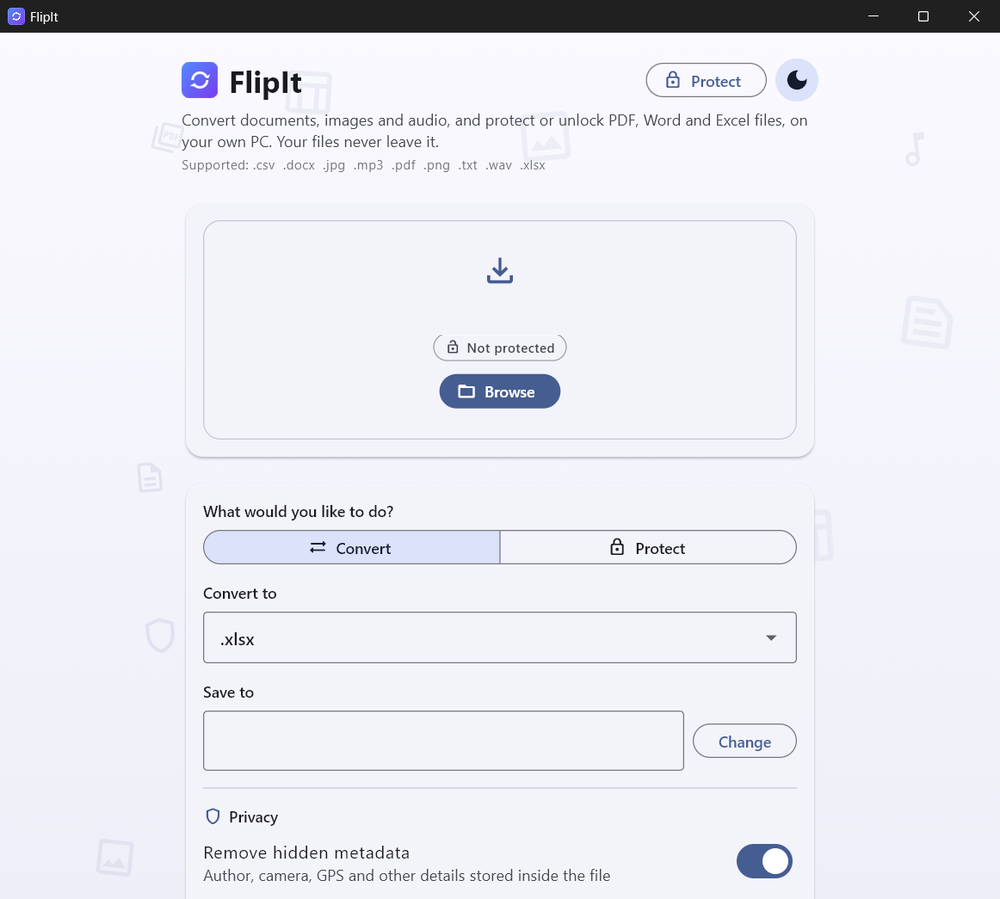
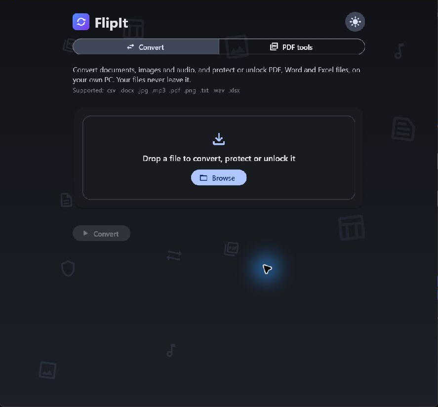

FlipIt for Android
Convert a file or scan a page with the camera. Everything is processed on your phone.
Download for AndroidChecksum and licence
SHA-256
3efb03ad88e3955b4909f2cdaa8b291944b7089661737d4ff180625f7947f7b6Built for Windows and Android
Convert documents, images and audio offline. No uploads. No account.
Free to download.


Open a document, photo or audio file in FlipIt.
Choose the format you need, such as PDF, Word or PNG.
Get a new copy in your chosen format. Your original stays unchanged.
Hidden details in a photo
Supported formats
Windows handles batches of the same file type. Android converts one file at a time and can scan pages with the phone's camera: adjust the four corners, then save as PDF, Word, JPG or PNG. Add more scanned pages to make one PDF. Picture size options show the estimated output size before conversion.
PDF tools
PDF tools are available on Windows and Android. Text recognition works in English and can make mistakes. A drawn or pictured signature is a visible mark, not a certified digital signature.
No. Converting happens on your device, with no account and no sign-in.
Nothing. FlipIt only reads them and saves the converted file as a new one.
Yes, for English text. Scanned PDFs become Excel or CSV tables, and photos become PDF or Word. On Android, scanned PDFs can become Word too. Clear, well-lit pages read best, and it is worth checking anything important against the original.
Get the app
Choose your device. Both apps work offline, with no account or file uploads.
Convert a file or scan a page with the camera. Everything is processed on your phone.
Download for AndroidSHA-256
3efb03ad88e3955b4909f2cdaa8b291944b7089661737d4ff180625f7947f7b6Convert documents, images and audio, including batches of the same file type.
Download for WindowsSHA-256
348b08c862e1c101a53e53d09babe1a48659175ceebb2fea09a800732d20d640Released 30 October 2026. Release notes · All checksums · Licence · Open-source library materials